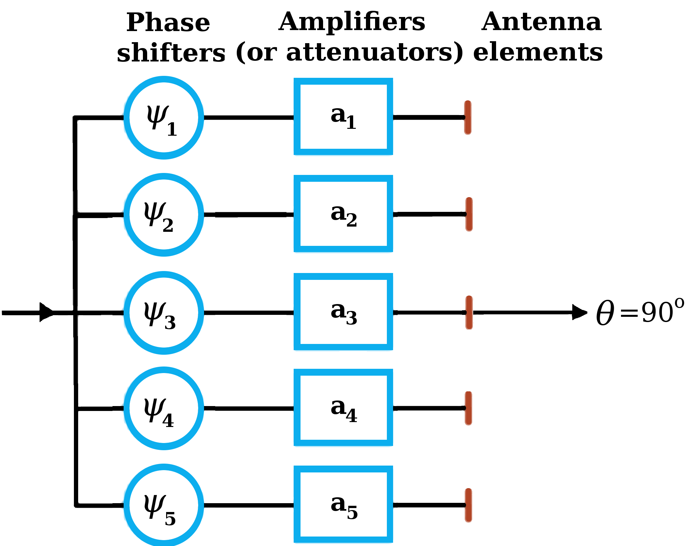

Code 3.1
Array Factor for Uniformly Spaced Antenna Array
This module computes the array factor as defined by Eq. (3.86) for an
N-element uniformly spaced array.
We provide 2 cases: 1. All the phases are set to zero, and the user can
set the amplitudes.
2. All the amplitudes are set to one, and the user can set the phases.
The spacing is specified by the user in wavelengths.

Element 1 Phase (deg):
Element 2 Phase (deg):
Element 3 Phase (deg):
Element 4 Phase (deg):
Element 5 Phase (deg):
Element Spacing, wavelengths:
Array Factor
Normalized Array Factor (dB)
↑
Angle, degrees
↑
Broadside backward
Broadside forward
Note: Once selected, the right and left arrow-keys can be used to move
the sliders.